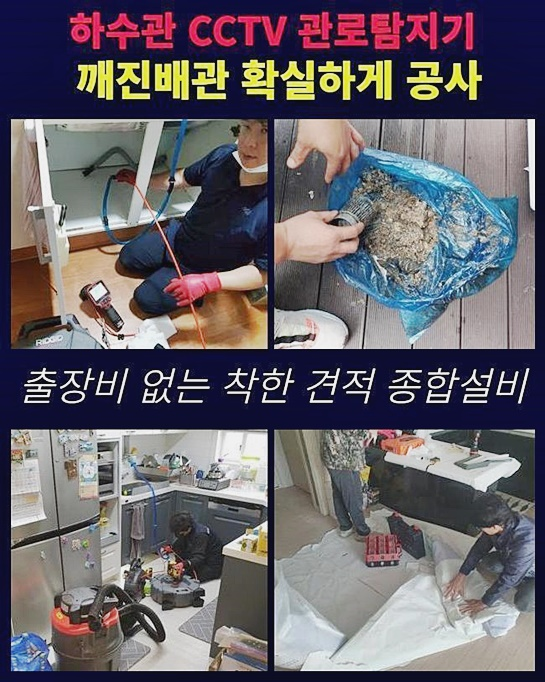
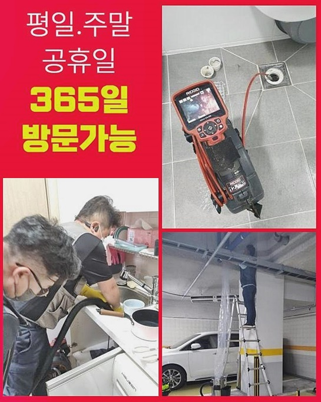
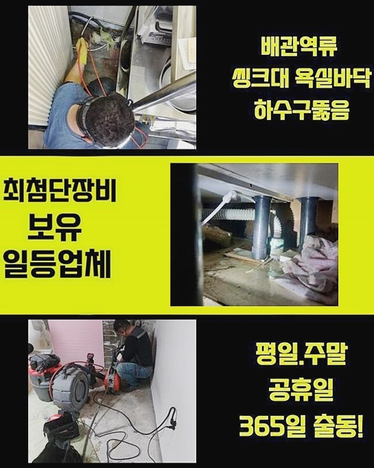
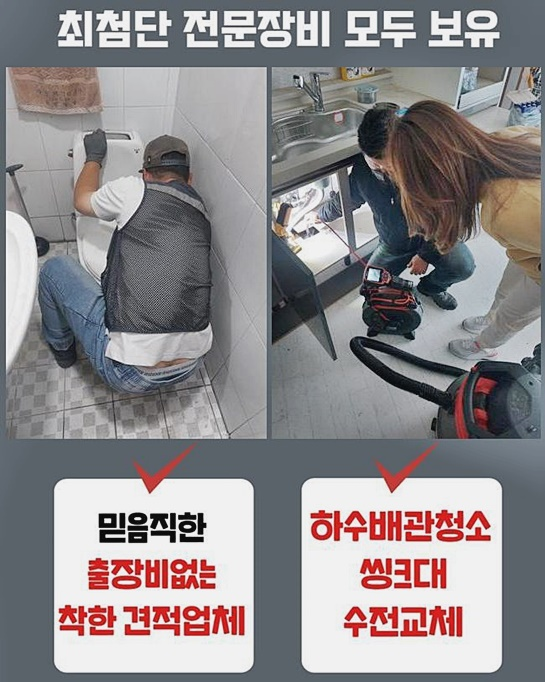
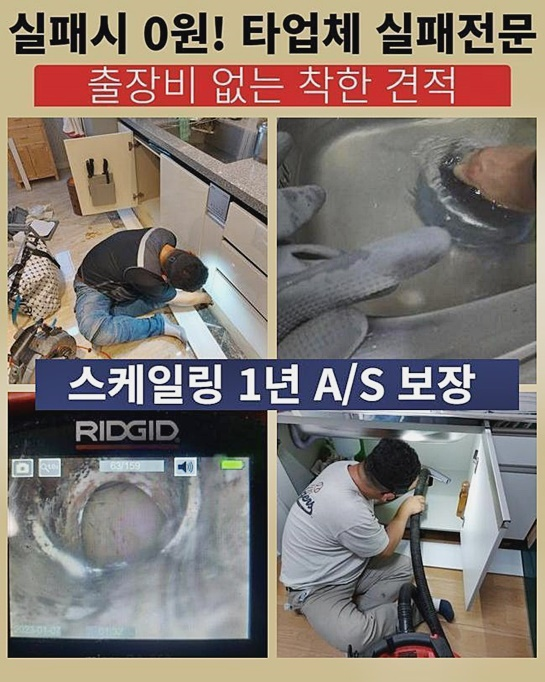
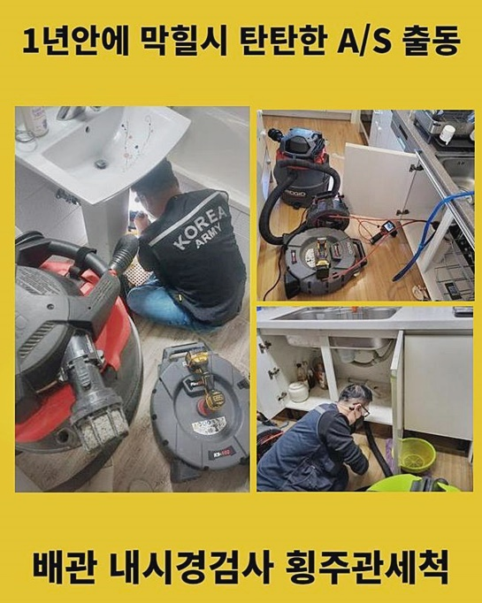
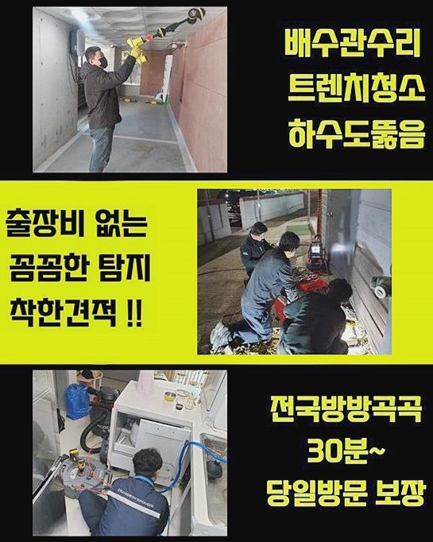

🏠 안산 안산동화장실역류 해양동 오수맨홀청소 물샘전문업체
안산시 상록구 배관막힘 전문 시공 후기

📋 작업 개요
- 위치: 안산시 상록구 해양동
- 서비스 유형: 배관막힘, 고압세척, 내시경점검
- 작업 일시:
- 업체명: 하수구수사대 (010-5615-2118)
🔍 문제 상황
안산 안산동화장실역류 해양동 오수맨홀청소 물샘전문업체
많은 사람들이 쓰는 건물내부에서 막힘들이 생겨나서 내방을 해보았는데요
확인해보니 물이 솟구치고 있었고 바닥에는 물때문에 흥건하다고 불편을 호소하셨습니다
이대로 내버려두면 문제는 불어나므로 신속하게 해결을 위해 달려간 현장을 같이 볼 예정인데요
저희들은 완성도 높은 세척과 청소를 진행해 고객분을 도와드리는데요
뚫는 작업에 실패했을 땐 수리관련 금액들도 받고있지 않고 있으므로 문제 발생 시 성공률이 뛰어난 저희들께 의뢰를 맡기세요
우선적으로 내시경장비로 안측을 관찰해야하죠 좁은 내측을 보기위해선 내시경장치가 필요합니다
내시경장치의 머리부에는 촬영용 부품이 있어서 작업 시 심층부까지 선명하게 관찰할 수 있도록 합니다
내시경으로 관찰하니 내부는 불그스름하게 되어버린걸 알 수 있었는데 이것이 기름들이라고 생각하시면 되겠는데요
이는 곧 배수공간들이 틀어막혀버린 상태에요
위와같은 상황에서는 연결된 관로에서 나가는 잔해물이 메인관으로 모이게되면서 찌꺼기까지 쌓여버려서 다량이 쌓여버리게 되면 막힘은 시간문제죠
이런 문제를 마주하면 다양한 측면에서 피해가 생기는 수 밖에 없죠
다양한 사람들이 사용하는 공간이라면 관리자가 신경을 쓰고 청소를 해주면서 쓰여져야 증상없이 지속적으로 쓰실 수 있으시답니다

🔎 원인 분석
💡 전문가 진단: 정밀 진단 장비를 사용하여 슬러지의 고착 여부를 판명하고 타격/세척 작업을 실시했습니다.
유분성분을 버리시거나 음식물들의 잔재나 물에 놓지 않는 것들처럼 막힐 수 있는 것들은 빠트리지않고서 신경쓰신다면 위같은 불상사들이 불거지지 않겠죠?
육안으로 사태를 파악해도 심한 기능저하를 보였고 고착물까지 많았던 상태였는데요
시발점을 찾으려고 트랩부품까지 빼서 내측을 파악해주며 수직배관 끝에도 관찰했는데요
원인조사를 확실하게 수행하지 못할 시엔 지속적으로 행할 과정도 의미없다 볼 수 있어요 중요한건 해결이겠으나 세척과정을 거쳐 똑같은 증상이 야기되지 않게끔 하는것이 무엇보다 중요하답니다
배수만 시켜놓고 가는것이 아닌 지속적으로 사용하며 재발되지 못해야 의뢰인분들의 만족이 커진다고 할 수 있겠습니다
이 장소는 세척이 철저하게 행해지지 못한 상황으로 위생적이지 못하게 관리해오셨음을 파악했는데요
통수오류들이 빈번하거나 심각성이 두드러진다면 점검등을 원만하게 진행하지않은 현장의 가능성이 큽니다
불특정 인원들이 이용하시기때문에 관리하는 것에 간헐적으로라도 유심히 지켜봐야하는데 원활히 이뤄지지 않았죠
개별적인 하수구들이 문제를 일으켰을때 대다수가 그 장소의 문제라고 생각하는데 안타깝게도 공동배수관까지 문제를 보이면 관련된 설비들에 증세를 전염시키죠
해당 상황이 벌어졌을땐 시공관련 비용까지 상승하고 투입되는 기간까지 늘어나서 고객의 불편들이 누적될 수 밖에 없어요
저희전문가들에게 호소를 하셨어요
현장을 다니다보면 음식물들을 오수관으로 배출시키는 경우들도 많이 보이고 기름류들도 싱크볼로 폐기하세요
기름들은 씽크대에 버리면 증세가 생기고 휴지 등을 이용하여 걷어내고 워싱을 해줘야되겠습니다

🔧 작업 과정
저희업체는 해당 사안처럼 한번 세척과 청소를 해드리고 나몰라라 하지 않고 1년이라는 기간의 애프터 서비스를 제공해드리므로 여러분들이 불안해하지않고서 이용가능하다고 칭찬을 아끼지 않으시는데요
저희업체는, 작업의 이물타격 부품이 중요하겠으나 그 절차들이 완벽해야된다고 생각하고 있어서 성능 좋은 장비를 가용합니다
먼저 내시경기기를 선두하여 석션장치와 샤프트장비인데요 배수관을 세척할 때에 요구됩니다
샤프트장비는 머리쪽이 노커체인으로 구성되어있어 이물을 제거하는데에 최적화된 기기에요
단단해진 이물과 흡착되어버린 기름들도 없애줍니다
이외에 석션기기는 빨아당기는 힘으로 오수들을 청소해요
청소해주는 시점에 흡입해 배수시키는게 목적이므로 그 결과도 좋아요 일상에서 주로 이용해주는 청소기들과 같다고 보시면 되는데요
철저하게 청소해주기 위해선 작업의 단계가 중요하겠습니다 배수장애의 까닭을 확실히 제거시키고 다시금 일어나지않게 해주어야 됩니다
오래도록 내식성이 저하된것이 확인되었고 수리하는데에 애로사항이 있었어요
위와같은 상황에서는 뚫어내는데에 혈안을 올리기보다는 고압수청소도 오차없이 이행되야 안정적이고 향후 문제도 생겨나지 않는답니다
고압수청소 기기는 케이블을 부착시켜서 배수관으로 투입해 작업을 이행합니다
물들로 인해만 깔끔한 하수관로를 확보할 수 있게 하므로 적재적소에 운용되어지는 장비죠
기름슬러지들을 세척들을 해주는 고마운 녀석이죠
세척하는 기능도 수행하므로 만족감은 높을 수 밖에 없어요
전문진마다 해결과정은 모두 차이를 보이는건 당연할 수 있겠으나 눈여겨 봐야할 건 작업을 하고서 재발오류가 되느냐 안 되느냐의 사안으로 접근해야합니다
저희전문진은 지금까지 안전한 해결을 터득하였고 저희는 서둘러 방문드려 신속하게 조치할 수 있죠
지역따지지 않고 한시간안에 찾아가는것이 가능한 까닭에 찾는 고객분들이 상당수 빈번하게 목격되요
문제가 목격되면 누구나 곤경에 처하게 되고 신속히 타파해야겠다는 생각뿐이실거에요
저희전문가가 수리를 해내고 그저 나몰라라하지 않고 일년간 무상보증도 수행해드리니 안전하게 이용해도 무방해요
세대들이 올바른 규칙들을 신경써서 생활하면 불미스러운 일은 대폭 줄어들게 됩니다
개인만의 증상들이 아닐 수 있어 다양한 사람들이 협조해가며 관리를 수습해야하죠


✅ 작업 완료
특정한 위치가 문제를 보이면 오늘 현장처럼 전체적으로 오류가 됩니다
때문에 이상징후들이 야기되면 전문적인 접근이 필수에요
최근들어 해결할 목적으로 약들을 구매하시는 의뢰자분이 늘어나고 있어요
약품들이 무용지물인 것은 단언할 수 없겠지만 사용 후 개선되지 못하면 깊숙한 곳까지 잔해물이 누적된 경우일 가능성이 있어 신속히 전문가를 통해 해결하는게 중요합니다
최종적으로 내시경장비로 이상이 없는지 보고 제대로 막혀버린 사안이 해결되면 마무리를 지어요
뚫어내지못한 경우라면 비용들을 받는 일이 없기에 편하게 도움을 청해보세요!




⚠️ 하수구 배관 막힘 예방 및 관리 가이드
- ✅ 머리카락, 비닐, 물티슈 등 물에 분해되지 않는 이물질은 절대 흘려보내지 마세요.
- ✅ 기름기 많은 식기는 설거지 전 키친타올로 먼저 기름때를 닦아내세요.
- ✅ 주기적으로 배수구에 뜨거운 물을 가득 부어주어 유지방 고착을 방지하세요.
- ✅ 작업 후 1년 이내 재발 시 무상 A/S 보증 서비스를 제공합니다.
💡 핵심 정리
- 확실한 장비 작업(내시경 점검 및 샤프트 스케일링)으로 원인을 뿌리 뽑습니다.
- 작업 후 1년 이내에 동일한 부위 재발 시 100% 무상 A/S 서비스를 보장합니다.
- 서울 · 경기 · 인천 전 지역에 24시간 언제든 긴급 출동할 수 있도록 항시 대기 중입니다.
❓ 자주 묻는 질문 (FAQ)
🚨 안산시 상록구 배관막힘 문제로 고민이신가요?
정확한 원인 진단과 확실한 시공으로 재발 없는 해결을 약속드립니다.
24시간 긴급 출동 | 서울 · 경기 · 인천 전지역 | 1년 내 재발 시 무상 A/S